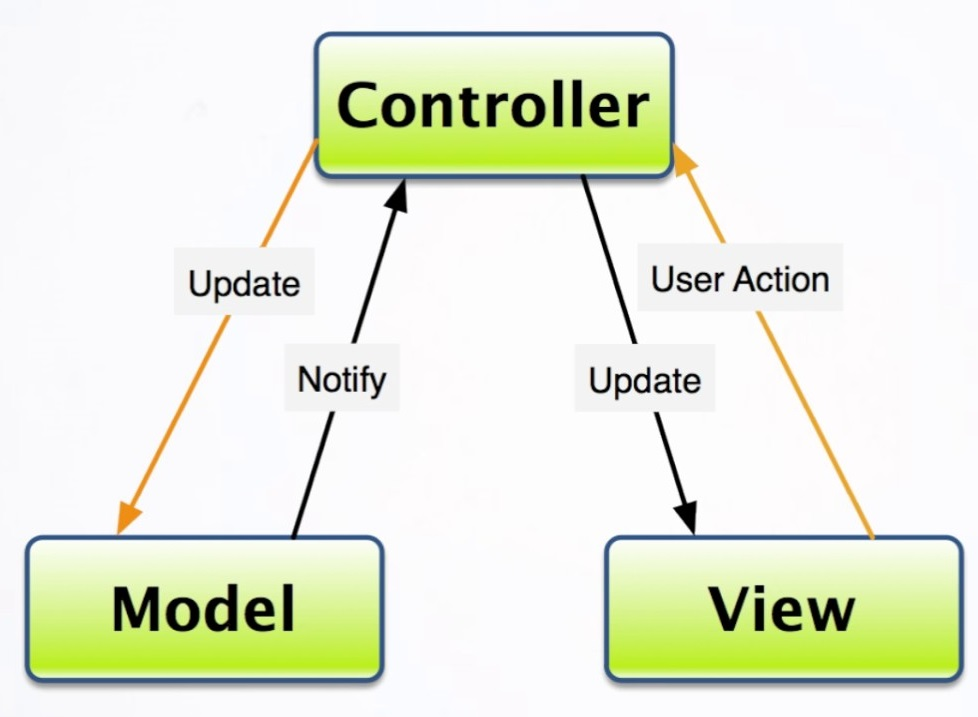
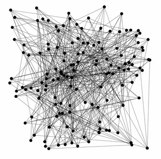
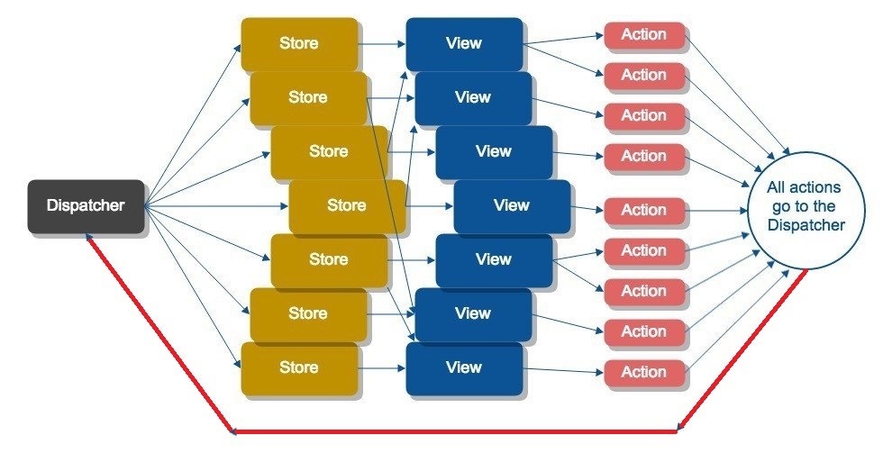
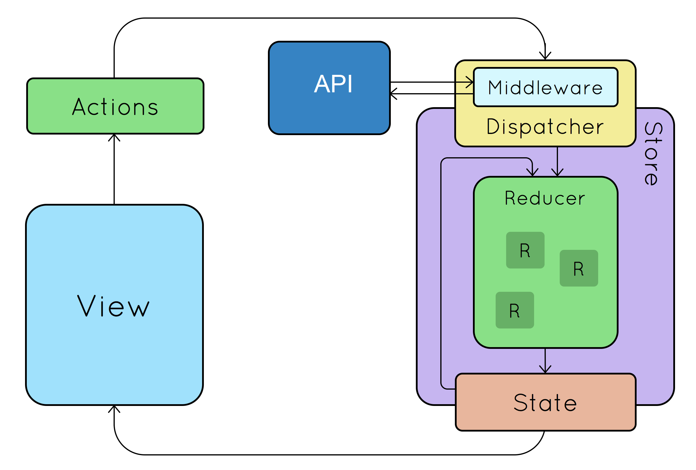
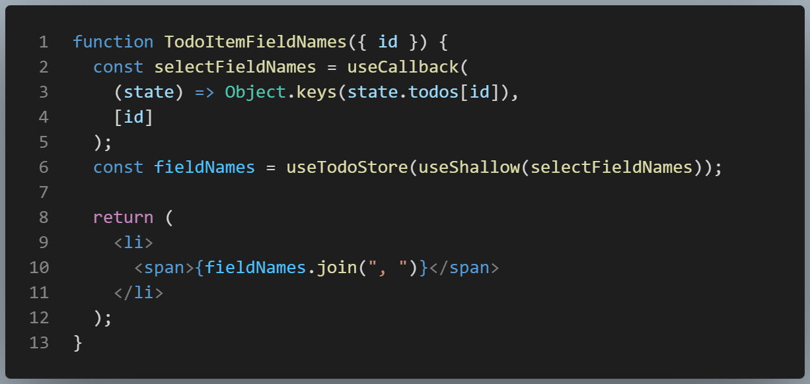
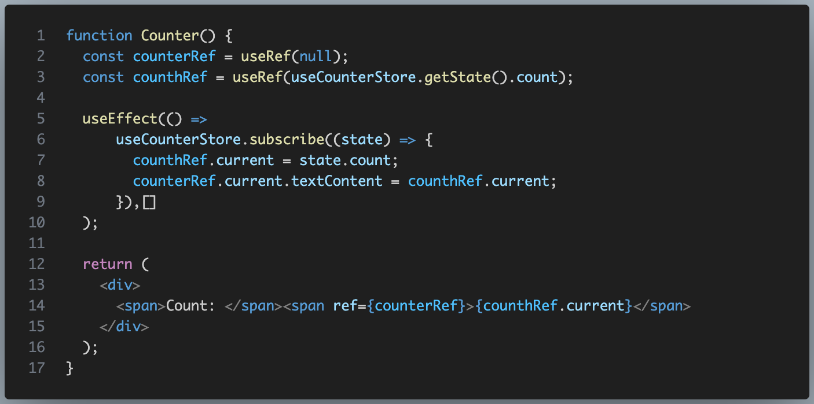

Zustand.js пришел изменить все правила игры!
Забудьте все, что вы знали о стейт-менеджерах прежде.
Yours Truly, Famous Inc.
Забудьте все, что вы знали о стейт-менеджерах прежде.
Сложность в программировании никуда не исчезает - она лишь перераспределяется и перетекает из одной формы в другую
Иногда сложность создают сами разработчики, создавая новые абстракции и блуждая вдалеке от истины в поисках оптимального решения многие годы!
А кто его не писал?
Состояние приложения хранилось во множестве глобальных переменных
Преимущества: простота
Недостатки: главным недостатком является не боль в пальцах при поддержке такого кода, а то, что глобальные переменные никогда не удаляются из памяти, их много и они не свзаны логически между собой!
Понятие бизнес-логики изменения состояния отсутствует
Состояние приложения хранится в одном объекте типа appConfig
Преимущества: состояние оформлено в одну сущность
Недостатки:
Теория
Состояние приложения хранится в модели
Преимущества:
Реальность
Состояние приложения хранится в модели
Недостатки:
Однонаправленный поток данных
Создание однонаправленного контролируемого и предсказуемого потока данных: представления -> канал данных -> модели -> представления
Для того, чтобы различать данные для разных сторов (моделей) в канале - данные снабдили метаданными и назвали этот тип данных Action
Однонаправленный поток данных
Однонаправленный поток данных
Преимущества:
Однонаправленный поток данных
Недостатки:
Это - Flux с единым стором и логикой по его обновлению
Изменения:
весь зопарк сторов с их не прозрачной логикой обновления заменили единым стором (полная аналогия с БД) и централизованной чистой логикой его изменения.
Добавили middleware для обработки бизнес-логики и сайд-эффектов
Это - Flux с единым стором и логикой по его обновлению
Это -Flux с единым стором и логикой по его обновлению
Преимущества:
Это -Flux с единым стором и логикой по его обновлению
Недостатки:
Чего удалось достичь:
Чего не удалось достичь:
Небольшое, быстрое и масштабируемое решение для управления состоянием, основанное на принципах Flux.
В его основе лежит хранилище основанное на базе publish/subscribe.
Имеет удобный API, основанный на хуках, не создает лишнего шаблонного кода и не навязывает жестких правил использования.
Не имеет проблем с Zombie children и context loss и отлично работает с React concurrency mode
const storeHook = create((set, get) => { store_config })
storeHook: (selector) => selectedState
selector: (state) => ({ извлечённые данные из state })
Хук имеет статические методы:
storeHook.getState: () => state
storeHook.setState: (newState) => void
storeHook.subscribe: (callback) => void
Как и в Redux вы можете написать для хранилища свои middleware, которые будут обрабатывать события и изменять состояние хранилища.
Zustand предлагает в пакете такие middleware как:
Используя статические методы хука:
вы получаете доступ к стору из любого окружения: как из методов стора, обработчиков событий React компонент, так и из vanilla JavaScript.
При этом вы свободно можете использовать асинхронную обработку данных и любые сайд-эффекты!💥💥💥
Всего 4 простых метода:
Если даже с параметрами ваш селектор может возвращать новый объект - оберните селектор в 2 хука: useCallback и useShallow
Используем механизм подписок без лишних перерисовок
Не каждый (если никто), чей голос громче всех звучит, или кто у всех на виду или в авторитете - есть Моисей! © Object
Фронтенду пришлось 10 лет бродить по технологическим дебрям, чтобы прийти к тому, что мы могли сделать еще тогда!
Pub/sub был в MV* с незапамятных времен - нам оставалось лишь
объединить все модели в один стор и оформить аналог хука!
Но на том повороте мы свернули не туда и пошли не за теми ...
В последнее время у новичков, кто руками не проходил стадию развития с использованием MV*, наблюдается тенденция наступать на те грабли, что индустрия уже давно прошла: model hell - появляются различные амёбные, молекулярные, атомные и кварковые "стейт-менеджеры"
Использование отдельных хранилищь оправдано лишь:
* - когда реально нет пересечений запросов к этим сущностям
Вопреки примерам из документации, рекомендую не создавать методы хранилища внутри него - если у вас в хранилище много сущностей или сущности сложные, а их методы обработки достаточно объемные - описание вашего хранилища станет не читаемым, не понимаемы и плохо поддерживаемым.
Если хотите иметь надежное приложение с минимумом багов - никогда!, никогда не давайте доступ к хранилищу разрабочкикам в обход его методов!
Проблема подавляющего большинства проектов заключается в том, что никто не соблюдает правило единственной отвественности - логика валидации и изменения данных размазана по всему коду, а хранилище используется исключительно как хранилище json! Отсюда и 99% багов в приложении.
Данные в хранилище должны быть максимально защищены от разработчика - в наше время верить нельзя никому, порой даже самому себе ... :)
Хранилище должно валидировать данные на входе, сериализивать их, проверить ссылочную целостность внутри и только после этого обновлять их и отдать их обратно сериализированными - только в этом случае вы получите не убиваемое ядро приложения и надежное приложение!
Перевод проекта с Redux на Zustand произошел очень быстро и без проблем - благодаря сходству семантики в обоих подходах (отправка actions/вызов методов хранилища и использование хуков) при переходе не возникало никаких проблем.
Параллельно хранилищу Redux было создано хранилище Zustand и постепенно все сущности без боли переносились в новый стор.
Самое главное - разработчики делали это с радостью и даже не просили денег за это! 😊
Сказать о том, что разработка с Zustand упростилась - это не сказать ничего!
Благодаря Zustand вся логика, связанная с доменными сущностями была собрана в хранилище. Используя Zustand вместе с "прагматичной архитектурой" (тема отдельного доклада) мы почти избавились от тестов (мы пишем их по минимуму) - в коде практически не осталось места для багов!
Мы отдали на откуп джуниоров создание визуальных компонент - они
создают компоненты, логику отображения и сражаются со storybook -
данные же подключаются к компонентам одной строчкой в контейнерах!
Код проекта стал структурированным, простым и понимаемым, а в проекте
мы практически избавились от багов!
После доклада сразу же идите выкидывать на свалку истории все прежние стейт-менеджеры - не мучьте себя! 😊
Используйте Zustand совместно с хорошей архитектурой приложения и будет вам счастье!